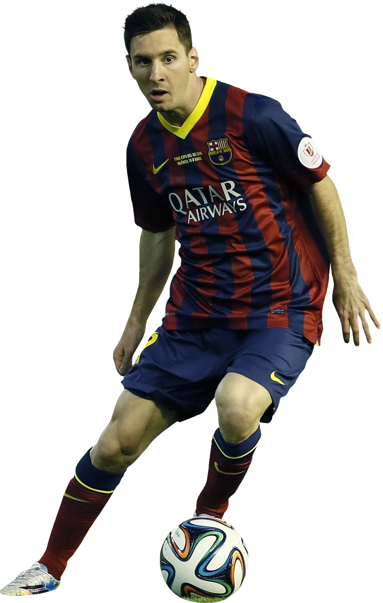

2004
[ARCHIVE_REF: 2004_BCN_DEBUT]
LIONEL MESSI
FC BARCELONA // NO. 30 // 17 YEARS OLD
Substituted on in the 82nd minute against RCD Espanyol on October 16, 2004. Long-haired, wearing oversized Blaugrana sleeves and yellow boots. Mentored by Ronaldinho, Messi scored his debut senior goal with an audacious, calm lob over Albacete's keeper on May 1, 2005.
09
MATCHES
01
DEBUT_GOAL
1ST
LA_LIGA
+ TELEMETRY: RONALDINHO LOB ASSIST VERIFIED
